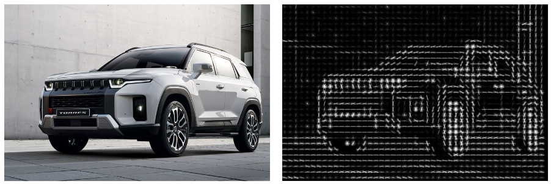
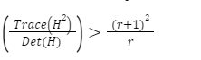
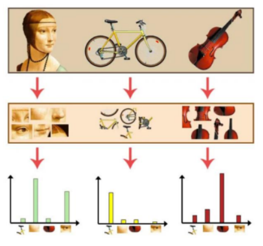

4 Feature Extraction and Matching
A. Pengenalan Feature Extraction and Matching
Ekstraksi dan Pencocokan Fitur adalah tugas penting dalam visi komputer, seperti struktur dari gerak, pengambilan gambar, dan deteksi objek.
Fitur adalah bagian dari informasi yang relevan untuk menyelesaikan tugas komputasi yang terkait dengan aplikasi tertentu. Fitur mungkin struktur tertentu dalam gambar seperti titik, tepi atau objek. Fitur mungkin juga merupakan hasil dari operasi lingkungan umum atau deteksi fitur yang diterapkan pada gambar. Fitur dapat diklasifikasikan menjadi dua kategori utama:
- Fitur yang ada di lokasi tertentu dari gambar, seperti puncak gunung, sudut bangunan, pintu masuk, atau petak salju yang berbentuk menarik. Jenis fitur yang dilokalkan ini sering disebut fitur titik kunci (atau bahkan sudut) dan sering digambarkan dengan tampilan tambalan piksel yang mengelilingi lokasi titik.
- Fitur yang dapat dicocokkan berdasarkan orientasi dan kenampakan lokalnya (profil tepi) disebut tepi dan juga dapat menjadi indikator yang baik untuk batasan objek dan kejadian oklusi dalam urutan citra.
Komponen utama Deteksi dan Pencocokan Fitur:
Deteksi : Identifikasi Feature Point.
Deskripsi: Penampilan lokal di sekitar setiap titik fitur dijelaskan dalam beberapa cara yang (idealnya) tidak berubah di bawah perubahan iluminasi, translasi, skala, dan rotasi dalam bidang. Kami biasanya berakhir dengan vektor deskriptor untuk setiap titik fitur.
Pencocokan: Deskriptor dibandingkan di seluruh gambar, untuk mengidentifikasi fitur serupa. Untuk dua gambar kita mungkin mendapatkan satu set pasangan ( Xi, Yi ) ↔︎ ( Xi’, Yi’ ), di mana ( Xi, Yi ) adalah fitur dalam satu gambar dan ( Xi’, Yi’ ) fitur pencocokannya di gambar lainnya gambar.
Feature Descriptor
Deskriptor fitur adalah algoritme yang mengambil gambar dan menampilkan deskriptor fitur/vektor fitur. Deskriptor fitur menyandikan informasi menarik ke dalam rangkaian angka dan bertindak sebagai semacam “sidik jari” numerik yang dapat digunakan untuk membedakan satu fitur dari fitur lainnya.
Idealnya, informasi ini akan menjadi invarian di bawah transformasi citra, sehingga kita dapat menemukan kembali fitur tersebut bahkan jika citra diubah dalam beberapa cara. Setelah mendeteksi feature point, kami melanjutkan untuk menghitung deskriptor untuk masing-masingnya. Deskriptor dapat dikategorikan menjadi dua kelas:
- Deskriptor Lokal: Ini adalah representasi kompak dari lingkungan lokal suatu titik. Deskriptor lokal mencoba untuk menyerupai bentuk dan penampilan hanya di lingkungan lokal sekitar titik dan dengan demikian sangat cocok untuk merepresentasikannya dalam hal pencocokan.
- Deskriptor Global : Deskriptor global menjelaskan keseluruhan gambar. Mereka umumnya tidak terlalu kuat karena perubahan sebagian gambar dapat menyebabkannya gagal karena akan memengaruhi deskriptor yang dihasilkan.
Macam - macam Algoritma Descriptor :
- SIFT(Scale Invariant Feature Transform)
- SURF(Speed Up Robust Feature)
- ORB(Oriented FAST and Rotate BRIEF)
- BRISK(Binary Robust Invariant Scalable Keypoints)
- BRIEF(Binary Robust Independent Elementary Feature)
Feature Matching
Pencocokan fitur atau umumnya pencocokan gambar, bagian dari banyak aplikasi visi komputer seperti pendaftaran gambar, kalibrasi kamera dan pengenalan objek, adalah tugas membangun korespondensi antara dua gambar dari pemandangan/objek yang sama. Pendekatan umum untuk pencocokan citra terdiri dari pendeteksian sekumpulan poin kepentingan yang masing-masing terkait dengan deskriptor citra dari data citra. Setelah fitur dan deskriptornya diekstraksi dari dua atau lebih gambar, langkah selanjutnya adalah membuat beberapa pencocokan fitur awal antara gambar-gambar ini.
Secara umum, kinerja metode pencocokan berdasarkan interest point atau feature point bergantung pada properti dari feature point yang mendasarinya dan pilihan deskriptor gambar terkait. Dengan demikian, detektor dan deskriptor yang sesuai untuk konten gambar harus digunakan dalam aplikasi. Misalnya, jika gambar mengandung sel bakteri, detektor blob harus digunakan daripada detektor sudut. Tapi, jika gambar tersebut adalah pemandangan kota dari udara, detektor sudut cocok untuk menemukan struktur buatan manusia. Selain itu, pemilihan detektor dan deskriptor yang mengatasi degradasi citra sangatlah penting.
Macam - macam Algoritma Pencocokan:
- Brute-Force Matcher
- FLANN(Fast Library for Aproximate Nearest Neighbors) Matcher
Template Matching
B. HOG dan SIFT
Histogram of Oriented Gradient (HOG)
Histogram of Oriented Gradients (HOG) adalah deskriptor fitur citra yang dapat digunakan untuk deteksi objek [52]. Untuk mengekstrak fitur ini, frekuensi orientasi gradien dalam bagian-bagian lokal citra dihitung. Penampilan dan bentuk objek lokal dalam sebuah citra dapat dijelaskan melalui distribusi gradien intensitas atau arah tepi. Langkah-langkah berikut perlu diimplementasikan untuk mengekstrak fitur HOG:
- Perhitungan gradien: Langkah pertama adalah menghitung gradien horizontal dan vertikal yang terpusat (Gx dan Gy) tanpa melakukan smoothing pada citra. Untuk tujuan ini, dapat digunakan operator Sobel atau operator deteksi tepi lainnya untuk mendapatkan gradien. Untuk citra berwarna, saluran warna yang memberikan magnitudo gradien tertinggi untuk setiap piksel dapat dipilih. Kemudian, magnitudo gradien dan orientasi gradien dihitung sebagai berikut:
- Orientasi pengalamatan: Langkah kedua adalah pembuatan histogram sel. Untuk ini, orientasi gradien diquantisasi ke dalam bin. Setiap bin akan mendapatkan voting berdasarkan magnitudo gradien. Voting juga dapat diberi bobot dengan filter Gaussian untuk mengurangi bobot piksel-piksel di dekat tepi blok.
Mari kita ambil contoh ekstraksi deskriptor HOG. Untuk ini, kita menggunakan citra berukuran 64 x 128. Pertama, citra dibagi menjadi blok 16 x 16 dengan tumpang tindih 50%. Jadi, totalnya akan ada 7 x 15 = 105 blok. Setiap blok harus terdiri dari 2 x 2 sel dengan ukuran 8x8 piksel. Sekarang, orientasi gradien diquantisasi menjadi 9 bin. Di sini, voting adalah magnitudo gradien. Sekarang, voting diinterpolasi secara bilinear antara pusat bin yang berdekatan. Misalnya, misalkan orientasi adalah 75°. Kemudian, jarak antara pusat bin bin 70 dan bin 90 adalah 5° dan 15°, masing-masing. Oleh karena itu, rasio kepemilikan adalah 15/20 atau 3/4 dan 5/20 atau 1/4. Hal ini ditunjukkan secara diagramatik pada Gambar 4.3. (a) dan (b). Histogram dari gradien yang diarahkan ditunjukkan pada Gambar 4.3(a).
- Penggabungan blok deskriptor: Histogram sel kemudian digabungkan untuk membentuk vektor fitur seperti yang ditunjukkan pada Gambar 3.26. Pada contoh kita, histogram yang diperoleh dari blok yang tumpang tindih 2 x 2 sel digabungkan menjadi vektor fitur 1-D dengan dimensi 105 x 2 x 2 x 9 = 3780.
- Normalisasi blok: Setiap blok dapat dinormalisasi dengan faktor normalisasi yang berbeda, seperti L2-norm, Zq-norm, Li-squared root norm, dll. Normalisasi blok membuat deskriptor invariant terhadap variasi pencahayaan dan fotometri.
- Deskriptor final: Deskriptor HOG akhir dapat digunakan untuk pengenalan objek. Deskriptor ini merupakan fitur untuk algoritma pembelajaran mesin, seperti Support Vector Machine (SVM).

Gambar 4.4. Hasil HOG
Scale Invariant Feature Transform (SIFT)
Transformasi fitur skala invarian (SIFT) adalah algoritma deteksi fitur untuk mendeteksi dan menggambarkan fitur lokal pada gambar untuk pengenalan objek. Detektor sudut Harris invarian terhadap translasi dan rotasi, tetapi tidak terhadap skala. Namun, algoritma SIFT dapat mendeteksi dan menggambarkan fitur lokal pada gambar. Fitur-fitur ini invarian terhadap translasi, penskalaan, dan rotasi gambar, serta sebagian invarian terhadap perubahan pencahayaan [55]. Fitur-fitur gambar yang diekstraksi dari gambar latihan harus tetap terdeteksi bahkan dengan perubahan skala gambar, noise, dan pencahayaan. Konsep skala memainkan peran penting dalam analisis gambar. Dalam analisis gambar, kita perlu mengekstraksi fitur gambar yang sesuai dengan menganalisis struktur gambar yang berbeda. Struktur-struktur ini mungkin ada pada skala yang berbeda. Jadi, jumlah informasi yang disampaikan oleh struktur gambar tertentu tergantung pada skala. SIFT mempertimbangkan masalah ini, yaitu fitur-fitur yang invariant terhadap perubahan skala. Langkah-langkah utama dari algoritma SIFT adalah sebagai berikut:
- Estimasi ekstremum skala-ruang: Ini sesuai dengan ekstremum DoG dan memastikan ekstraksi wilayah invarian skala. Tentukan lokasi perkiraan dan skala titik fitur yang menonjol (juga disebut “keypoints”).
- Lokalisasi dan penyaringan titik fitur: Perbaiki lokasi dan skala mereka, yaitu pilih titik fitur yang asli dan buang yang buruk.
- Pemberian orientasi: Tentukan orientasi untuk setiap titik fitur, yaitu kurangi efek rotasi.
- Membuat deskriptor: Menggunakan histogram deskriptor orientasi untuk setiap titik kunci.
Deskriptor ini dibuat dengan menghitung histogram orientasi untuk setiap titik kunci. Deskriptor ini menangkap informasi gradien lokal di sekitar titik kunci dan memberikan representasi yang khas dari wilayah lokal. Langkah-langkah dalam membuat deskriptor adalah sebagai berikut:
- Bagi wilayah di sekitar titik kunci menjadi sub-wilayah atau bin yang lebih kecil.
- Untuk setiap sub-wilayah, hitung magnitudo dan orientasi gradien piksel.
- Tetapkan setiap piksel ke salah satu bin berdasarkan orientasi gradiennya.
- Untuk setiap bin, akumulasikan magnitudo gradien dari piksel yang ditugaskan.
- Buat histogram orientasi dengan mempertimbangkan magnitudo gradien yang terakumulasi sebagai bobot untuk setiap bin.
- Normalisasi histogram untuk membuatnya invarian terhadap perubahan pencahayaan.
- Deskriptor akhir terbentuk dengan menggabungkan histogram orientasi yang telah dinormalisasi.
Setelah deskriptor dihitung untuk semua titik kunci, mereka dapat digunakan untuk berbagai aplikasi seperti pengenalan objek, penyatuan gambar, dan pencarian gambar. Pemadanan titik kunci di gambar-gambar yang berbeda berdasarkan deskriptornya memungkinkan pencocokan fitur yang kuat melintasi perubahan skala, rotasi, dan pencahayaan.
Untuk mengimplementasikan algoritma SIFT dalam Python, dapat menggunakan pustaka OpenCV. OpenCV menyediakan fungsi-fungsi untuk deteksi titik kunci, perhitungan deskriptor, dan pencocokan fitur. Dapat merujuk pada dokumentasi dan tutorial OpenCV untuk informasi detail tentang cara menggunakan algoritma SIFT dalam Python.C. Feature Matching.Gambar 4.5. menunjukkan semua langkah implementasi dari algoritma SIFT. Langkah-langkah ini sekarang akan dijelaskan secara detail di bawah ini.
- Deteksi fitur skala-invarian: Langkah pertama adalah mendeteksi titik-titik unik (kunci) yang dapat dipilih kembali secara berulang dengan perubahan lokasi/skala. Untuk tujuan ini, seperti yang ditunjukkan di Gambar 4.6., digunakan representasi skala dengan menghitung piramida Laplacian yang dinormalisasi skala menggunakan difference of Gaussian (DoG) multiskala. Secara khusus, DoG dari citra D(x, y, σ) diberikan oleh:
D(x, y, σ) = L(x, y, kiσ) — L(x, y, kjσ)
Di mana, L(x, y, kσ) adalah hasil konvolusi dari citra asli f(x, y) dengan blur Gaussian G(x, y, kσ) pada skala kσ, dengan kata lain,
L(x, y, kiσ) = G(x, y, kσ) * I(x, y)
- Deteksi puncak dalam skala-ruang: Pada tahap ini, titik-titik ekstrem lokal dideteksi dengan mempertimbangkan baik ruang maupun skala. Tujuannya adalah untuk mengidentifikasi lokasi dan skala yang dapat diberikan secara berulang dalam pandangan yang berbeda dari adegan atau objek yang sama. Pada kasus diskrit, hal ini ditentukan dengan membandingkan dengan 26 tetangga terdekat seperti yang ditunjukkan di Gambar 4.7.
- Lokalisasi titik kunci dan penolakan outlier: Selanjutnya, skala yang memberikan ekstremum dalam perbedaan Gaussian ditetapkan sebagai skala untuk titik kunci. Namun, deteksi ekstremum dalam skala-ruang menghasilkan banyak calon titik kunci. Namun demikian, beberapa titik kunci tidak stabil. Oleh karena itu, langkah berikutnya dari algoritma ini adalah menolak beberapa titik kunci yang memiliki kontras rendah atau yang terlokalisasi buruk di sepanjang tepi. Titik kunci dengan kontras rendah sensitif terhadap noise.
Penghilangan titik kunci kontras rendah: Titik kunci dengan kontras rendah dan terlokalisasi buruk dihilangkan dengan menggunakan interpolasi subpiksel/subskala menggunakan ekspansi Taylor, yang diberikan oleh:
Di mana, D dan turunannya dihitung di titik kunci calon dan x = (x, y, ) adalah offset dari titik ini. Lokasi puncak x diperkirakan dengan mempertimbangkan turunan fungsi ini terhadap x dan mengatur nilainya menjadi nol. Jika offset x lebih besar dari ambang batas yang telah ditentukan dalam dimensi manapun, maka hal ini menunjukkan bahwa puncak berada lebih dekat dengan titik kunci calon lainnya. Dalam hal ini, titik kunci calon harus diubah dan interpolasi dilakukan di sekitar titik tersebut. Jika tidak, offset ditambahkan ke titik kunci calon tersebut. Hal ini dilakukan untuk mendapatkan perkiraan yang diinterpolasi untuk lokasi puncak.
Penghilangan respons tepi: Titik-titik tepi sesuai dengan kontras tinggi dalam satu arah dan rendah dalam arah lainnya. Fungsi DoG memiliki respons kuat di sepanjang tepi gambar. Titik kunci yang memiliki lokasi yang sangat tidak terdefinisi tetapi memiliki respons tepi tinggi dihilangkan. Langkah ini meningkatkan stabilitas. Puncak yang tidak terdefinisi dengan baik dalam fungsi DoG menunjukkan kelengkungan tinggi di sepanjang tepi dan nilai rendah dalam arah tegak lurus. Kelengkungan utama dapat dihitung dengan mengevaluasi matriks Hessian. Perlu dicatat bahwa untuk puncak yang tidak terdefinisi dengan baik dalam fungsi DoG, kelengkungan utama di sepanjang tepi jauh lebih besar daripada kelengkungan utama sepanjangnya. Untuk menemukan kelengkungan utama, kita perlu mencari solusi untuk eigenvalue dari matriks Hessian orde kedua H sebagai berikut:
Dalam persamaan di atas, rasio R hanya bergantung pada rasio eigenvalue r = A1/A2, dan R minimum ketika eigenvalue sama satu sama lain. Jika perbedaan absolut antara dua eigenvalue lebih tinggi, maka perbedaan absolut antara dua kelengkungan utama D juga akan lebih tinggi. Ini sesuai dengan nilai tinggi dari R. Oleh karena itu, eliminasi titik kunci dilakukan jika:

Penugasan orientasi: Pada langkah ini, setiap titik kunci diberikan satu atau lebih orientasi. Orientasi ditentukan berdasarkan arah gradien citra lokal. Deskriptor titik kunci dapat direpresentasikan relatif terhadap orientasi ini. Itulah sebabnya, mereka invariant terhadap rotasi citra. Untuk ini, magnitudo dan orientasi pada citra yang telah dihaluskan dengan Gaussian (pada skala yang sesuai dengan titik kunci) dihitung. Pertama, citra yang telah dihaluskan dengan Gaussian L(x,y,a) pada skala titik kunci a diambil agar semua perhitungan terkait dilakukan dalam cara yang invariant terhadap skala. Untuk sampel citra L(x,y) pada skala σ, magnitudo gradien m(x,y) dan orientasi θ(x,y) dihitung menggunakan perbedaan piksel sebagai berikut:
Perhitungan magnitudo dan arah untuk gradien harus dilakukan untuk setiap piksel tetangga di sekitar titik kunci dalam citra L yang telah dihaluskan dengan Gaussian. Selanjutnya, histogram orientasi dibentuk dari orientasi gradien titik sampel dalam sebuah wilayah di sekitar titik kunci. Histogram orientasi memiliki 36 bin yang mencakup rentang 360 derajat orientasi. Setiap sampel yang ditambahkan ke histogram diberi bobot berdasarkan magnitudo gradiennya dan oleh jendela lingkaran berbobot Gaussian. Puncak-puncak dalam histogram ini sesuai dengan orientasi dominan dari patch citra. Pada skala dan lokasi yang sama, dapat ada beberapa titik kunci dengan orientasi yang berbeda. Jika terdapat penugasan beberapa orientasi, titik kunci tambahan harus dibuat. Titik kunci tambahan tersebut harus memiliki lokasi dan skala yang sama dengan titik kunci asli untuk setiap orientasi tambahan. Jadi, setiap titik kunci memiliki parameter (x, y, 2, θ).Deskriptor titik kunci: Pada langkah-langkah sebelumnya, lokasi titik kunci pada skala tertentu telah ditemukan. Setelah itu, orientasi ditetapkan untuk titik kunci tersebut. Penugasan orientasi menjamin invariansi terhadap lokasi citra, skala, dan rotasi. Langkah selanjutnya adalah menghitung vektor deskriptor untuk masing-masing titik kunci. Tujuannya adalah membuat deskriptor menjadi sangat khas. Selain itu, deskriptor juga seharusnya sebagian invariant terhadap pencahayaan, sudut pandang 3D, dll. Langkah ini harus dilakukan pada citra yang paling mendekati skala titik kunci. Sebelum menghitung deskriptor, penting untuk memutar wilayah dengan nilai orientasi negatif (minus θ) yang terkait dengan titik kunci.
Pertama, sejumlah histogram orientasi dibuat pada subwilayah (lingkungan) piksel 4x4, dan 8 bin dialokasikan untuk setiap subwilayah tersebut. Histogram ini berasal dari magnitudo dan nilai orientasi dari sampel dalam wilayah 16x16 di sekitar titik kunci. Jadi, setiap histogram berisi sampel dari subwilayah 4x4 dari wilayah lingkungan asli. Selanjutnya, magnitudo diberi bobot dengan fungsi Gaussian. Deskriptor kemudian menjadi vektor yang berisi semua nilai dari histogram-histogram ini. Karena terdapat 4x4 = 16 histogram, masing-masing dengan 8 bin, vektor tersebut akan memiliki 128 elemen. Jadi, dimensi deskriptor atau vektor fitur akan menjadi 128. Vektor ini kemudian dinormalisasi menjadi panjang satuan untuk mengurangi efek variasi pencahayaan. Gambar 4.8. dan 4.9. menunjukkan gradien gambar dan deskriptor titik kunci yang sesuai.
Untuk aplikasi seperti pencarian gambar berbasis konten, fitur SIFT dapat dihitung untuk sekumpulan gambar dalam basis data, dan deskriptor-fiturnya disimpan dalam basis data tersebut. Begitu juga untuk sebuah gambar query, fitur SIFT dapat dihitung. Untuk pencocokan, deskriptor terdekat dalam basis data yang sesuai dengan deskriptor gambar query dapat ditemukan dengan menggunakan metrik jarak yang sesuai, dan gambar query tersebut dapat diambil kembali dari basis data.
Proses pencarian dapat dilakukan dengan membandingkan deskriptor-fitur gambar query dengan deskriptor-fitur gambar dalam basis data menggunakan metrik jarak seperti jarak Euclidean atau jarak cosine. Metrik jarak digunakan untuk mengukur sejauh mana kedua deskriptor-fitur tersebut mirip satu sama lain. Jika terdapat kemiripan yang signifikan antara deskriptor-fitur gambar query dengan deskriptor-fitur gambar dalam basis data, gambar-gambar tersebut dapat dianggap sebagai pencocokan potensial.
Setelah pencocokan dilakukan, gambar-gambar dalam basis data dapat diurutkan berdasarkan tingkat kemiripan dengan gambar query. Gambar-gambar yang memiliki deskriptor-fitur yang paling mirip dengan gambar query akan muncul sebagai hasil teratas dalam hasil pencarian. Dengan demikian, gambar-gambar dalam basis data yang memiliki fitur yang mirip dengan gambar query dapat ditemukan dan dipulihkan dengan menggunakan fitur-fitur SIFT. Penggunaan fitur-fitur SIFT dalam aplikasi pencarian gambar berbasis konten memungkinkan pencarian yang lebih akurat dan efisien dengan mengabaikan perubahan skala, rotasi, dan pencahayaan dalam gambar.
C. BoW dan BoVW
Bag of Word (BOW) pada awalnya tidak digunakan untuk visi komputer namun digunakan dalam bidang Text-Processin. Terkadang dalam konteks visi komputer Bag of Word disebut juga Bag of Visual Word. Namun Kita tetap akan menggunakan istilah BOW karena ini adalah istilah yang digunakan pada OpenCV.
BoW adalah teknik yang digunakan untuk memberikan bobot atau hitungan untuk setiap kata dalam rangkaian dokumen; kita kemudian merepresentasikan dokumen-dokumen ini dengan vektor-vektor dari jumlah ini. Mari kita lihat pada sebuah contoh, sebagai berikut:
Dokumen 1: Saya suka Python dan Saya suka Java Dokumen 2: Saya suka Python dan C# Dokumen 3: Saya tidak suka pemrograman
Dari ketiga dokumen diatas dapat dibuat kamus atau kosakata, dengan nilai nilai sebagai berikut:
{
Saya : 4
suka : 4
Python : 2
dan : 2
Java : 1
C# : 1
tidak : 1
pemrograman : 1
} Kita memiliki 8 entri atau fitur yang nantinya akan direpresentasikan untuk dokumen 1,2, dan 3. Setiap vektor berisi nilai yang mewakili jumlah semua kata dalam kamus secara berurutan, untuk dokumen tertentu. Representasi vektor dari tiga kalimat sebelumnya adalah sebagai berikut:
Vektor-vektor ini dapat di konseptualisasikan sebagai representasi histogram dari sebuah dokumen atau sebagai vektor deskriptor yang dapat digunakan untuk pengklasifikasian.
Konsep BOVW(Bag of Visual Word) diadaptasi dari BOW(Bag of Word) serta Information Retrieval yang ada pada NLP(Natural language Processing). BOW(Bag of Wors) bekerja dengan memakai frekuensi tiap kata-kata supaya mengetahui keywoard dari dokumen dengan menghitung berapa jumlah setiap katta yang muncul di dokumen (Davida, 2018).
Yang membedakan BOVW dengan BOW yaitu pada BOW yang digunakan adalah kata-kata, sedangkan BOVW menggunakan fitur-fitur gambar atau bisa dikatakan pola unik pada gambar yang berperan sebagai “kata-kata” yang ada di BOW. Setelah menghitung frekuensi, maka dari perhitungan frekuensi tersebut setiap fitur-fitur gambar dibuat histogram. Fitur itu sendiri tersusun dari deskriptor dan keypoints (Davida, 2018).
Sesuai dengan namanya, keypoints merupakan titik-titik yang menunjukan bagian-bagian gambar yang “menonjol”. Sedangkan deskriptor adalah gambaran dari keypoint. Dengan begitu, walaupun gambar dikecilkan, diperluas, diputar, letak titik-titik keypoint-nya akan tetap sama. Histogram frekuensi yang terbentuk dapat digunakan untuk memprediksi kategori citra serta menemukan citra lainnya yang mirip atau serupa (Davida, 2018).
